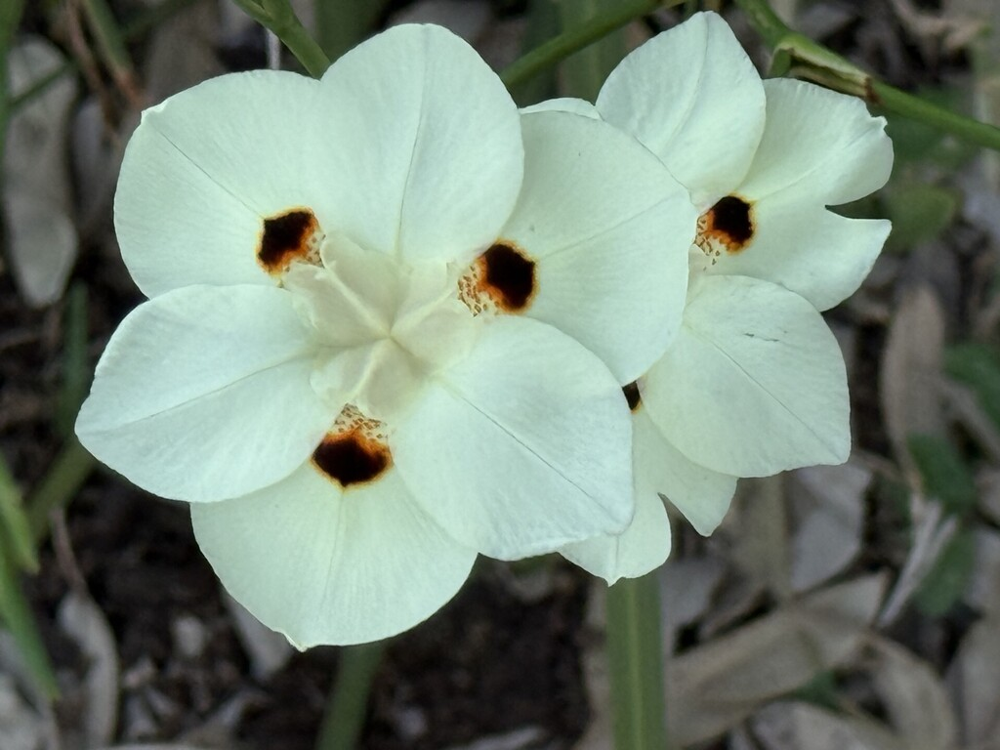

- The genus Dietes grows naturally in only two places on Earth: a narrow coastal strip of South Africa — and a single remote island in the Tasman Sea (Lord Howe Island), roughly 9,000 miles away. How the seeds crossed that ocean is still unknown.
- In spite of being planted in public landscapes from California to Australia, this plant is listed as Rare on South Africa's national Red List — its wild populations occupy a coastal band barely 125 miles long.
- Each flower lasts a single day, but the plant blooms in rhythmic flushes roughly every two weeks through the warm months — the trait that gave it the name Fortnight Lily. The species name bicolor simply means 'two-colored,' describing exactly what you see: pale yellow petals, dark purple-to-black spots.
- At Palma Sola this iris runs in a continuous row — about ten yards of it — along the Front Pond bank beside a bench. Despite its tropical looks, it shrugs off drought, flooding, shade, and salt spray with equal indifference — which is why it's still standing.
Native to a narrow coastal and near-interior band of South Africa, from around Makhanda in the Eastern Cape north to Port Edward in southern KwaZulu-Natal — a range of roughly 125 miles. In the wild it favors streambanks, damp grasslands, and open woodlands, often among rocks in light shade.
Despite its wide use in cultivation worldwide, it is listed as Rare on South Africa's SANBI Red List, though populations are stable and face no identified threats.
Introduced to warm-climate horticulture as one of the most reliably resilient ornamentals available, it has transitioned from its highly restricted native range to become a staple of public landscapes, roadsides, and gardens across Florida, California, and beyond.
- The African Iris belongs to Dietes, one of the iris family's most fascinating evolutionary riddles. Five of its species cluster tightly along the eastern coast of South Africa, while the sixth is completely isolated on Lord Howe Island in the Tasman Sea.
- This massive geographic gap continues to baffle botanists, as the mechanisms behind such a long-distance oceanic distribution remain entirely unexplained.
- The species epithet bicolor — 'two-colored' — describes exactly what you see in the flower: pale yellow outer tepals contrasting with dark purple-to-black spots ringed in orange. The flower's architecture is more intricate than it looks: it is built as three separate functional units, and a visiting bee must enter each one individually to access the nectar pooled at the base of each outer tepal.
- Each bloom lasts just one day, but the plant produces them in rhythmic flushes roughly every two weeks through the warm months — hence Fortnight Lily. Old flower stalks are never cut, because the plant reblooms from them year after year; those untidy-looking spent stems are doing important work.
- At Palma Sola the African Iris has one of the nicer spots in the park: a long row — roughly ten yards — running between a bench and the edge of the Front Pond, so anyone sitting down looks out over the irises to the water. To either side, and along the far bank, are the pond-edge restoration plantings — making the bench a natural viewing seat for the shoreline the park has been rebuilding.
- Much of that surrounding planting was likely put in by the park's high school volunteers, who earn college-scholarship service hours doing exactly this kind of restoration work. The African Iris row, tough and evergreen, anchors the edge while the native species fill in around it.
The African Iris offers nectar and pollen to bees and other daytime pollinators during each two-week bloom flush. Its flowers open in the morning and close by evening, aligning neatly with diurnal bee activity; each of the flower's three functional units must be entered separately, ensuring good pollen transfer with every visit.
Its dense, clumping fans of stiff evergreen leaves provide year-round ground-level cover for lizards, frogs, and insects — particularly valuable here at the pond edge, where it sits among native restoration plantings and adds structure and layered shelter along the bank. While it is a non-native ornamental rather than a wildlife powerhouse, in this setting it earns its place.
Spreads by slowly expanding rhizomes, forming dense clumps over time; also grows from seed. Propagated by dividing the rhizomes after flowering or by sowing seed in autumn or spring.
Iris-like blooms on tall, branched stalks — pale yellow with three dark purple-to-near-black spots each ringed in orange. Flowers open in the morning and last a single day, appearing in flushes about every two weeks through the warm season. Pollinated by bees, which must enter each of the flower's three separate functional units individually.
An elongated capsule that can become heavy enough to bend the flower stalk toward the ground; it dries, splits, and releases small, dark brown seeds close to the parent plant.
Stiff, narrow, sword-like, pale green, evergreen, growing in flat fans from the base of the clump — narrower and slightly more arching than its close relative Dietes iridioides. Attractive year-round even out of bloom.
Look for the fans of stiff sword-shaped leaves and the wiry branched flower stalks rising above them — topped with pale yellow, dark-spotted, iris-like flowers. Note that the flowers open in the morning and are gone by evening, and look lower down for the heavy seed capsules bending the stalks.
Crucially, notice that the old flower stalks are left uncut — that's deliberate, because the plant reblooms from them. From the bench, look past the iris to the pond-edge restoration plantings flanking it on both sides and across the water.
Don't eat any part of this plant. The iris family carries irisin and related irritants — most concentrated in the rhizomes — and ingestion causes nausea, vomiting, and digestive upset.
It's mildly toxic rather than dangerous, but it isn't a food plant.
It's mildly toxic to dogs and cats too, causing stomach irritation. Keep pets from digging up and chewing the rhizomes, where the compounds are strongest.
PLACEMENT: Front Pond, a continuous row about 10 yards long between a bench and the water, flanked by pond-edge restoration plantings (likely installed by high school scholarship volunteers).
CURATORIAL NOTE: Despite its ubiquity in warm-climate horticulture worldwide, Dietes bicolor is listed as Rare on the SANBI Red List in its native South Africa, with a wild range of only about 125 miles of Eastern Cape / southern KwaZulu-Natal coastline.
GENUS NOTE: The genus Dietes occurs naturally in only two locations — the eastern coast of South Africa and Lord Howe Island in the Tasman Sea. How the island population arrived there remains unexplained.

- © Rhonda Olschefskie (CC-BY-NC), via iNaturalist
- © Randall Carter (CC-BY-NC), via iNaturalist